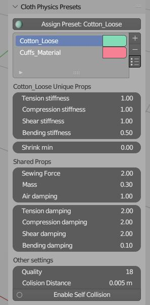
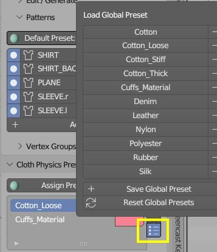
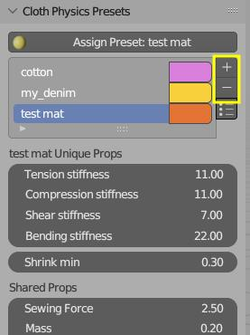

Cloth Material Physics#
In Blender, there isn't an easy method to set different cloth physics properties for different parts of the fabric. However, with Garment Tool's "Cloth Physics Presets," you can easily select a preset and apply it to the pattern you have under the cursor.

Global Cloth Presets#
First, step is to load global cloth presets, to current blend file. You can do this by clicking "Library Presets" button, marked in yellow on the image below.
 Click on any preset name to load it into the current blend file.
Note - If you do not see any Global Presets, use
Reset Global Presetsbutton to initialize them.
Local Cloth Presets#
After loading global presets (or creating new one by clicking [+] icon), you can apply these local (scene) presets to the pattern.
- Select Preset from the list, that you want to apply to the pattern.
- Select cloth object and click
Assign Preset: namebutton, - Then click on the pattern in 3D Viewport.
- Use Enter or RMB to finish.

Note - Local presets can be saved to the global library, by clicking
Save Global Presetbutton.
Local Preset - How they work#
Local cloth presets settings are stored in current blend file. To use them in another blend file, you need to save them to the global library.
Cloth settings are split into sections:
- Unique Properties - these properties are unique to the pattern, depending on the pattern's material.
- Shared Properties - these properties are shared between all patterns - no matter what material they use
Note - which shared properties are used (from which local preset) is determined by sewing patterns 'Default Material' property. See Sewing Patterns for more information.
This is due to the fact, that some clot properties cannot be masked with vertex groups, and some can. For example mass - cannot be masked, meaning all cloth vertices have to use same mass.
The final section is for other cloth settings: simulation quality, collision settings. They are not part of the preset, but it is handy to have in one spot, together with other cloth settings.